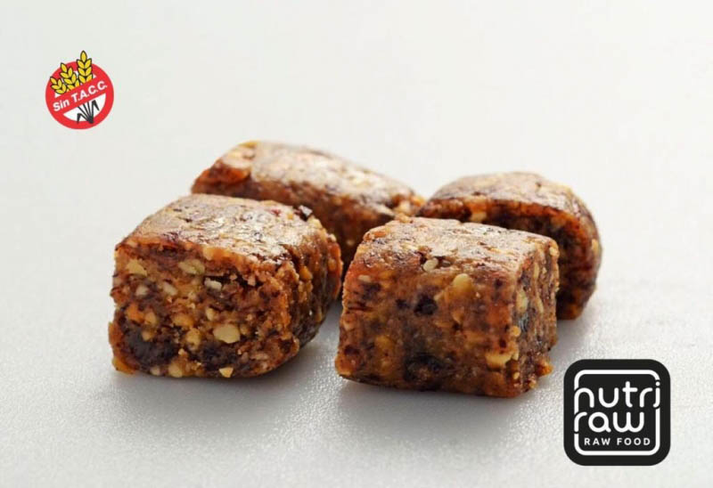
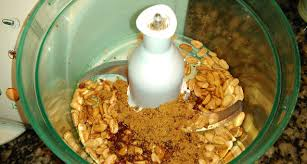
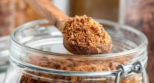
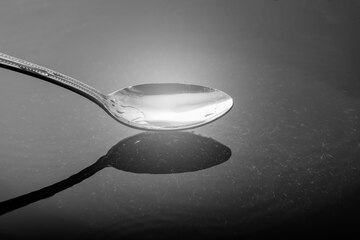
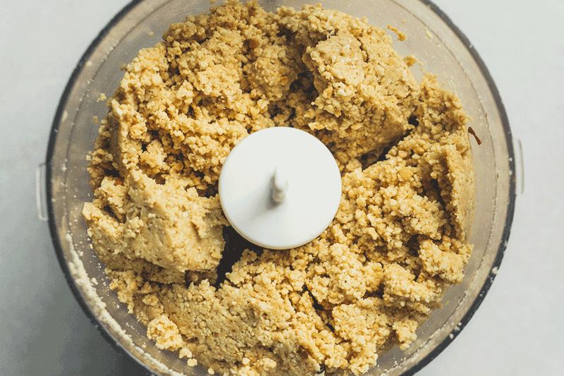
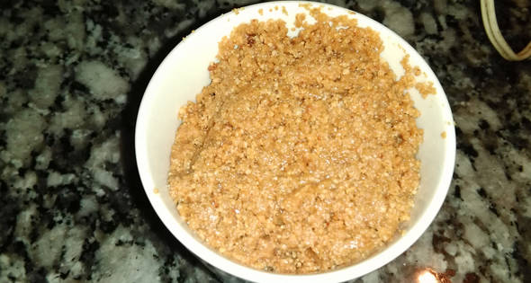
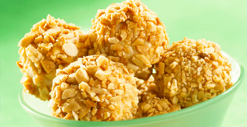
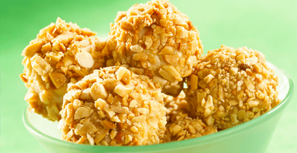

Turron de mani

En esta ocacion vamos a realizar una preparacion super saludable, muy rica y libre de TAC
Ingredientes:
- Mani li-300gr
- Azucar mascabo-150gr
- Agua-c/n
- Opcional:cacao amargo
Procedimientos:
- Procesar el mani

- Agregar el azucar mascabo y seguir procesando

- Agregar 4-5 cucharadas de agua

- Volver a procesar todo

- Colocar en un boul, verificar textura deseada

- Dar forma deseada y dejar enfriar en heladera por un par de horas hasta que endurezca
 

Luego de algunas horitas de reposo, estamos en condiciones de degustar esta rica preparacion.